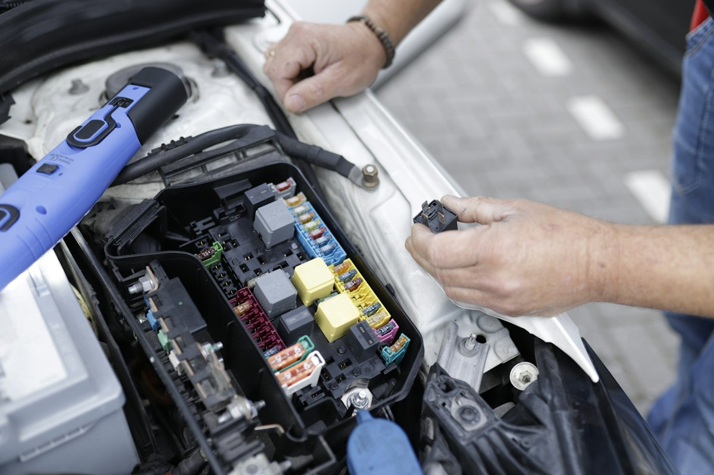

Country Auto has been serving drivers in Springville and throughout Utah County since 2011. We believe automotive service should be built on honest communication, dependable workmanship, and old-fashioned customer care.
Our approach is simple: use modern technology to diagnose today's vehicles while maintaining the personal service customers expect from a local repair shop.
We work on cars and trucks of all makes and models and provide everything from routine maintenance to major mechanical repairs. When a repair requires a specialist or dealership, we believe in being honest about that too.
We explain what your vehicle needs and help you understand your repair options.
We use current diagnostic technology to help identify vehicle problems accurately.
We are proud to serve Springville and the surrounding Utah County community.
From oil changes and brakes to tires, diagnostics, emissions testing, and mechanical repairs, we provide a wide range of automotive services.